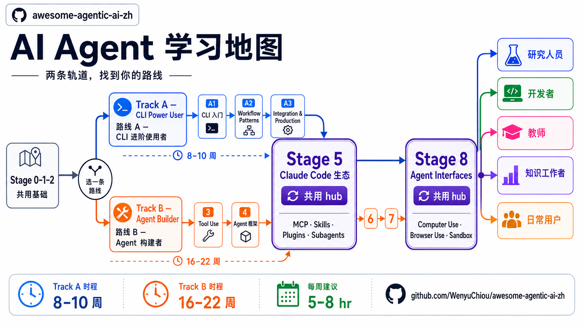

原课程本地核对资料，保留原内容与顺序。外链已改为本地阅读入口。命令中的原仓库路径请按本课运行指南换成实际位置；版本差异见本课说明。MIT © 2026 Wenyu Chiou。

awesome-agentic-ai-zh
🤖 一张从“AI Agent 是什么”走到“能做出可靠系统”的学习地图
先选一条路，再一步一步走。重要概念、动手练习与精选资源都帮你排好顺序。
📱 手机阅读请使用在线文档站。
🎯 这份地图帮你做什么？
AI Agent（AI 智能体）是“能为了人的目标，自己判断下一步并采取行动的 AI 系统”。人给它目标后，它会读取当前情况、选择下一步，需要时使用工具，再根据结果继续、修正、停止，或把控制权交还给人。它可以自动替人完成工作，但只能在人给的规则和权限内行动。只回答一次的聊天机器人，或每一步都预先固定好的脚本，不一定是 Agent。这个 repo 不要求你一开始就懂所有名词，而是带你依序完成三件事：
- 先懂基础：LLM（Large Language Model，能读写语言的模型）、Prompt、API（Application Programming Interface，让程序调用服务的接口） 与 Token 是什么。
- 再做出东西：让模型调用工具、跑 Agent Loop、读文件与记住事情。
- 最后做得可靠：加入权限、Eval、人工批准、观测与失败恢复。
这里的角色是学习路线图 + 精选资源 + 可直接运行的小练习。需要完整章节时，我们会带你去官方文档、Datawhale Hello-Agents 或对应的 Cookbook，不重写另一套百科全书。需要连接模型时，每个练习会再说明云端或本机路径。
章节中的重要技术词第一次出现时会先用白话说明，再保留正式英文。忘记某个词时，直接查名词表。
🚀 现在就开始
- 完全没写过程序：从 Stage 0：基础准备开始；API 或 CLI Agent 不熟时，搭配零基础设置指南。
- 已经会 Python、Git 与 API：从 Stage 1：LLM 基础开始。
- 还不确定要走哪条路：先看下面的 Track A／Track B 选择表。
走 Track A 或 Track B 前，先确认 Stage 0–2；只走日常用户路线的人可以直接打开角色指南。
| 你现在想做什么？ | 建议路线 | 路线入口 |
|---|---|---|
| 用 Claude Code、Codex、OpenCode 等 CLI Agent 完成工作 | Track A — CLI Power User | A1：选一个 CLI Agent |
| 自己写 Agent、工具循环、Workflow 与服务 | Track B — Agent Builder | Stage 3：第一个 Agent Loop |
| 只想在日常生活安全使用 AI，暂时不写程序 | 日常用户路线 | 日常用户指南 |
💻 展开：下载到本机
git clone https://github.com/WenyuChiou/awesome-agentic-ai-zh.git
cd awesome-agentic-ai-zh
下载后先打开 stages/00-foundations.zh-Hans.md，或依上表直接前往适合你的第一站。
从 Stage 0 到 Stage 8，另有 Stage 7.5 阅读站

这张地图共有 8 个主题 Stage + Stage 0 准备关 + Stage 7.5 进阶阅读站，也就是 10 个学习站。Track A／B 读者先确认 Stage 0–2 共用基础；已经会 Python、Git 与 API 的人可以跳过 Stage 0。日常用户可以直接走角色指南。
共用基础：Stage 0–2
| Stage | 这一步解决什么？ | 完成后你能做什么？ |
|---|---|---|
| 0 · 基础准备 | 电脑与基本工具准备好了吗？ | 用 Python 调用公开 API、读 JSON（JavaScript Object Notation，程序交换数据常用的文本格式），并用 Git 保存成果 |
| 1 · LLM 基础 | LLM、Token、Context 与模型差在哪里？ | 调用一个 LLM，并依需求选云端或本机模型 |
| 2 · Prompt 设计 | 怎么把目标、数据、规则与输出说清楚？ | 用固定案例比较 Zero-Shot、One-Shot、Few-Shot 与 CoT（Chain-of-Thought，用中间步骤处理问题的推理提示方法） 的边界 |
Track A：使用 CLI Agent 把工作做完
正式顺序是 A1 → A2 → Stage 5 → A3 → Stage 8。 Stage 8 建议接着学，不影响开始 Track A Capstone。
| 顺序 | 这一步解决什么？ | 完成后你能做什么？ |
|---|---|---|
| A1 · 选一个 CLI Agent | OpenRouter、OpenCode、Pi、Ollama 分别是什么？ | 选对工具并完成第一个小任务 |
| A2 · 建立可重复流程 | 怎么把规则与步骤留给下一次使用？ | 写 Project Instructions、Skill 与可重用工作流程 |
| 5 · Claude Code 生态 | MCP、Skills、Plugins、Hooks 与 Subagents 怎么分？ | 先读核心 5.1–5.4；5.5–5.8 依工作需要选读 |
| A3 · 接进真实工作 | 怎么安全连接外部工具、CI 与团队流程？ | 用最小权限、人工检查与记录完成集成 |
| 8 · Agent 操作界面 | Agent 怎么操作浏览器、画面与 Sandbox？ | 判断任务该用 CLI、Browser、Computer Use 还是 API |
Track B：从零打造 Agent
| 顺序 | 这一步解决什么？ | 完成后你能做什么？ |
|---|---|---|
| 3 · 工具使用与第一个 Agent Loop | 模型怎么安全调用工具并重复下一步？ | 做出有最大轮数、会验证参数的 Agent Loop |
| 4 · Workflow Graph 与 Agent 框架 | 怎么把多个步骤画成工作地图？ | 选择 Workflow、Agent、Graph 与 Framework |
| 5 · Claude Code 生态 | MCP、Skills、Plugins、Hooks 与 Subagents 怎么合作？ | 组合工具、规则与可重用能力 |
| 6 · Memory · RAG（Retrieval-Augmented Generation，先找相关资料，再依资料回答） | Agent 怎么查文件、保存与取回重要信息？ | 建立最小 RAG、long-term memory 与 contextual retrieval 流程 |
| 7 · Agent 上线工程：可测、可看、可停、可恢复 | Agent 怎么在真实环境稳定运作？ | 加入 Eval、观测、预算、Human-in-the-loop（HITL，人工批准）与恢复 |
| 7.5 · 进阶 Agentic 概念地图 | 还有哪些进阶 Pattern 值得认得？ | 从 12 个概念选读 PAR loop、agent-as-judge 等需要的主题 |
| 8 · Agent 操作界面 | Agent 怎么操作 API 以外的真实环境？ | 选择 Computer Use、Browser Use 或 Code Sandbox |
Stage 4 先看懂 Workflow Graph，再用 framework 把它做出来；Stage 7 加入 Eval、观测、批准与恢复，让流程稳定运行。
🔭 学习顺序：Stage 2 Prompt → Stage 3 Agent Loop → Stage 4 Workflow Graph／Framework → Stage 5 工具与规则 → Stage 6 Context Engineering → Stage 7 production。Prompt、Context、Harness、Loop、Graph 会一起工作；它们不是五层，也不是互相取代的产品世代。
Track A 完成 A3 后，可开始 Capstone 项目。Track B 则先完成 Stage 8（含 Stage 7.5）。用 PROGRESS.zh-Hans.md 记录进度。
⏱️ 查看时间估算（安排参考，不是截止日期）
- Track A：约 8–10 周。重点是使用现成 CLI Agent 完成工作。
- Track B：主干约 16–22 周；每周投入 5–8 小时时，通常需要 5–7 个月。
- Stage 5 是工具与规则 Hub：Track A 看怎么用，Track B 看怎么组合。
- Stage 8 是操作界面 Hub：Track A 看怎么委派，Track B 看怎么接进自己的 Agent。
时程只是安排参考。先完成眼前的一步，不需要一次读完整张地图。
依你的身份继续走

| 路线 | 适合谁 | 你会处理什么？ |
|---|---|---|
| 🔬 研究人员 | 研究生、博后、PI | 文献证据、可重现流程、Multi-Agent Review |
| 💻 开发者 | 软件工程师 | CLI Delegation、Code Review、测试与回滚 |
| 🎓 教师 | 老师、讲师 | 备课、反馈、隐私与教学 Prompt |
| 📊 知识工作者 | 顾问、PM、分析师 | Email、会议与报告工作流程 |
| 👥 日常用户 | 不一定写程序的 AI 用户 | 写作、学习、隐私与安全使用 |
💡 怎么学才不容易卡住？
- 一次只走一个 Stage：先回答这一章的核心问题。
- 核心词与必读先看：它们会直接用在后面的练习。
- 直接复制第一个命令：先跑不连网的测试，不必抄一份空白文件。
- 一次只改一件事：改完立刻再跑测试，才知道是哪个改动造成结果。
- 做到完成条件再往下走：看懂不等于做得到。
📚 先收藏的学习入口
这里只放最常用入口；完整清单在 RESOURCES.zh-Hans.md。星号表示学习优先顺序，不是项目排行榜。
| 用途 | 入口 | 什么时候用？ | 重要性 |
|---|---|---|---|
| 开始 | 零基础设置指南 | 第一次安装与执行 | ⭐⭐⭐⭐⭐ |
| 如何使用这份教材 | 开始第一个动手练习前 | ⭐⭐⭐⭐⭐ | |
| 学习进度表 | 想知道下一步或记录完成项目 | ⭐⭐⭐⭐ | |
| 学习 | 核心名词表 | 遇到 Token、RAG、MCP 等陌生词 | ⭐⭐⭐⭐⭐ |
| 可执行范例入口 | 想直接跑离线测试与小型案例 | ⭐⭐⭐⭐⭐ | |
| 实作 Cookbook | 想做 Skill、MCP、Office、Zotero 或本机 LLM | ⭐⭐⭐⭐ | |
| 查资料 | 资源工具柜 | 不知道该查 Guide、Catalog 还是 Cookbook | ⭐⭐⭐⭐⭐ |
| 完整资源清单 | 想找官方文档、课程、社群与延伸阅读 | ⭐⭐⭐⭐ | |
| CLI Agent 选择指南 | 准备走 Track A 或比较 CLI 工具 | ⭐⭐⭐⭐ | |
| 课程与认证地图 | 分清完成证书、技能徽章和认证考试 | ⭐⭐⭐⭐ |
🤝 一起改进这张地图
- 内容错误、失效链接或过时信息：请开 Issue。
- 想补一个项目或学习资源：请附上“它教哪个 Stage 的什么”。
- 准备送 PR：先看 CONTRIBUTING.zh-Hans.md 与写作规范。
- 最近更新内容：查看 CHANGELOG.md。
🧰 展开：完整贡献方式与自动检查
你可以修正文字、补三语镜像、回报缺少的主题，或长期维护一个 Stage／角色路线。新增 GitHub 项目链接时，自动检查会协助查看归档状态、License 与最近更新；是否收录仍由 maintainer 依学习价值判断。
完整角色与规则见 CONTRIBUTORS.md。
🙏 重要启发与相关项目
- Datawhale Hello-Agents — 适合需要完整章节与深度实作的读者。
- Datawhale 社群 — 中文机器学习共学社群，提供许多可靠的学习入口。
- liyupi/ai-guide — 偏向广度资源库；本 repo 则负责安排学习顺序。
📖 展开：贡献者与引用格式
@misc{awesome_agentic_ai_zh_2026,
title = {awesome-agentic-ai-zh: A Structured Learning Roadmap for Agentic AI},
author = {Chiou, Wenyu},
year = {2026},
url = {https://github.com/WenyuChiou/awesome-agentic-ai-zh}
}
☕ 支持与联络
这份学习地图采 MIT 授权，会继续免费公开。一般问题与建议请使用 Issue；需要私下联络时可寄信至 wenyuchiou12@gmail.com。
如果这份地图帮到你，欢迎给一个 ⭐ Star，或请作者喝杯咖啡。
⭐ Star 历史
License
MIT。Maintained by @WenyuChiou。